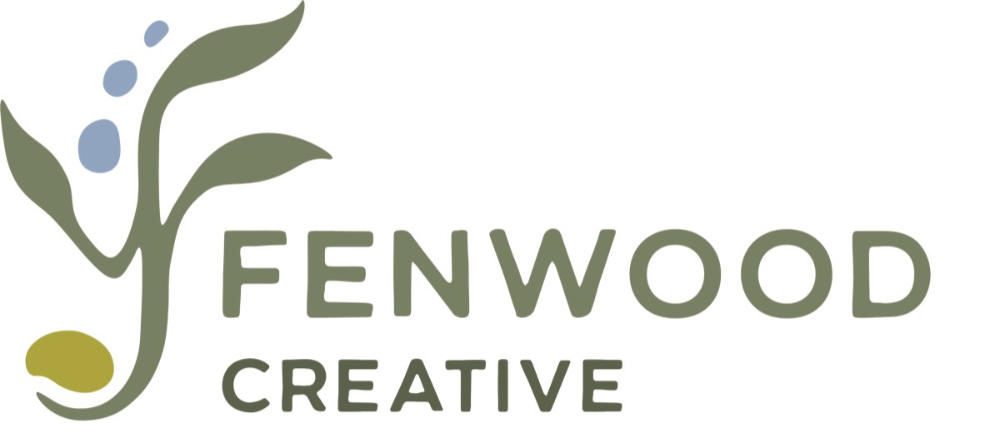

Notre volet florissant de signalisation d’interprétation devient une entreprise indépendante, Fenwood Creative
Détenue et dirigée par notre ancienne directrice de l’éducation et de la vulgarisation, Emma Ausford, Fenwood Creative perpétuera la créativité, l’esprit et la narration fondée sur la science que vous connaissez et appréciez dans les projets de signalisation d’interprétation de Fuse.
Forte de plusieurs années à diriger des projets d’interprétation chez Fuse, Emma est heureuse de poursuivre ce travail. Fenwood Creative se consacrera à la création de panneaux et d’expositions d’interprétation inspirants qui relient les gens au monde naturel par un design soigné, une narration réfléchie et un profond attachement au territoire.
Fuse demeure votre partenaire de choix pour :
les infographies
la synthèse des connaissances
les guides pratiques
l’animation
les partenariats d’échange des connaissances
l’éducation et la vulgarisation sur les projets de conservation et de gestion du territoire
et d’autres produits et services de communication scientifique.
Nous estimons que cette décision permettra au travail de signalisation d’interprétation de continuer à grandir, tout en préservant l’orientation et la portée de nos autres activités, qui visent à relier le savoir à la pratique.
Visitez www.fenwoodcreative.ca pour en savoir plus et suivez @fenwoodcreative sur Instagram pour rester en contact.
Et si vous ne suivez pas encore Fuse, suivez-nous sur LinkedIn et @fuseconsulting sur Instagram.